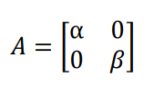
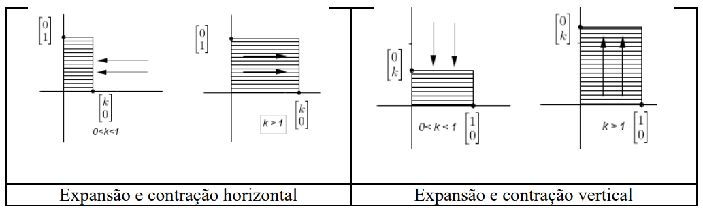
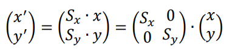

Esta transformação baseia-se em expansão ou contração, é bastante utilizada quando queremos
fazer um objeto parecer maior ou menor, em outras palavras, mudar sua escala. Quando damos um
zoom em um fotografia para ampliá-la ou diminui-la estamos aplicando uma transformação de
escala. Seja um ponto P(x, y) sobre o qual queremos efetuar
a transformação e 𝛼 e 𝛽 números reais não nulos, podemos definir a função T como sendo:
T: ℝ² → ℝ²
t(x, y) ⟼ (𝛼x, 𝛽y)
Sendo a Matriz da Transformação:


Esta transformação faz com que os objetos sejam esticados ou encolhidos na direção dos eixos
x e y. O redimensionamento S(Sx, Sy)
mapeia o ponto (x, y) ao ponto (x′, y′) dado por:

Sx é o fator de escala na direção do eixo x. Se |Sx| > 1,
então ocorre uma expansão da direção
do eixo x. Se |Sx| < 1, então ocorre uma contração no lugar. Se
, além da
expansão ou contração na direção do eixo x, uma reflexão neste eixo também ocorre. Os
mesmos resultados ocorre com Sy que é o fator de escala na direção do eixo y.
Matriz de Escala
ℝ2 ➜ ℝ2